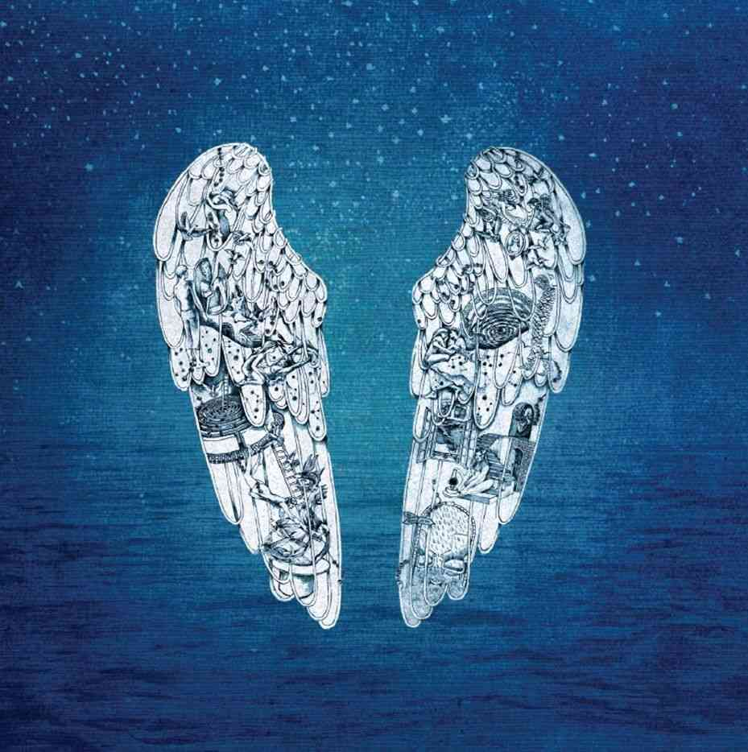

Ghost Stories
Released May 2014
Musicians:
- Chris Martin, pianist & Vocals
- Jonny Buckland, Guitarist
- Guy Berryman, guitar & Will Champion, drummer
Ghost Stories was recorded by the band throughout 2013 and 2014 at the band's purpose-built home studios in London, England, and in Los Angeles. It features guest producers Avicii, Timbaland and Madeon, and the band's frequent collaborator Jon Hopkins. It was promoted by the band with an accompanying prime time TV special, a visual album, and a special six-date promotional tour of the album, as well as various appearances on television and radio.

Side One
- Always in My Head
- Ink
- Midnight
- Oceans
- Magic
Side Two
- Another's Arms
- A Sky Full of Stars
- O
- True Love
- Ghost Stories went number number-one in over 100 countries on iTunes. In the UK Albums Chart, the album sold 168,048 copies during its opening week.
- The creation of the album actually started at Guy Berryman's house in London in early 2013 where he had settled a little studio where everyone gathered to jam and try some new music during a break after the band's big tour for Mylo Xyloto
- Paul Epworth, producer
- The album was nominated for Best Pop Vocal Album at the 57th Grammy Awards and named Top Rock Album at the 2015 Billboard Music Awards.